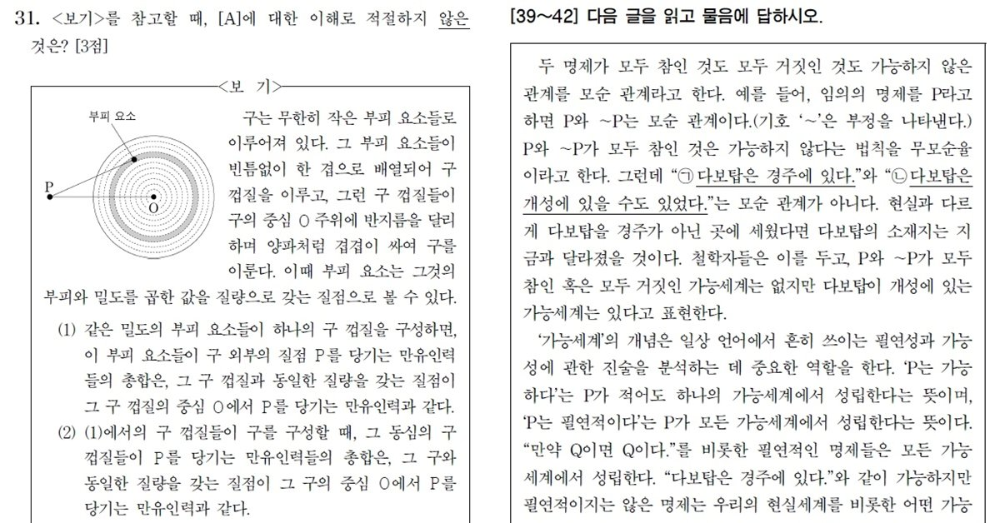

독서(비문학)
- 마더텅 고1 국어 독서 : 학평 기출문제 풀면서 훈련하기. 기출문제집은 리얼, 씨뮬, 자이스토리 등 어느 문제집을 사더라도 수록된 문제들이 다 같기 때문에 책을 고르는 기준은 "해설"이 얼마나 친절한가, 본인의 니즈와 맞는가여야 함. 마더텅을 추천하는 이유는 해설이 친절해서일 뿐이고 각자 직접 서점에 가서 하나씩 둘러보길 추천함.
- EBS 수능특강 독서 : 기출문제가 아닌 비문학 지문의 단점은 지문의 내용과 문제가 쓸데없이 조잡하다는 데 있는데, 수능특강 지문들은 그나마 깔끔한 편이기 때문에 연습하기에 좋음. 엄청나게 어려운 난이도가 아니기도 하며, EBS에서 해설강의를 함께 볼 수 있기 때문에 추천.
- 매3비 : 비문학에서 중요한 건 꾸준함이라서, 매일 적게라도 계속 풀어보는 걸 추천